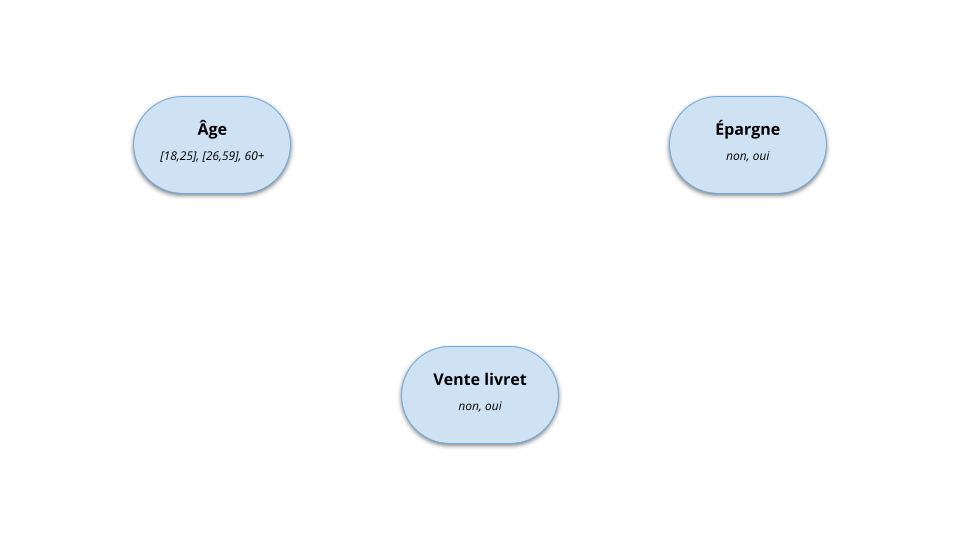
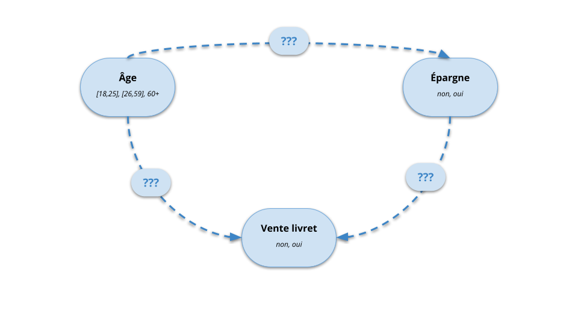
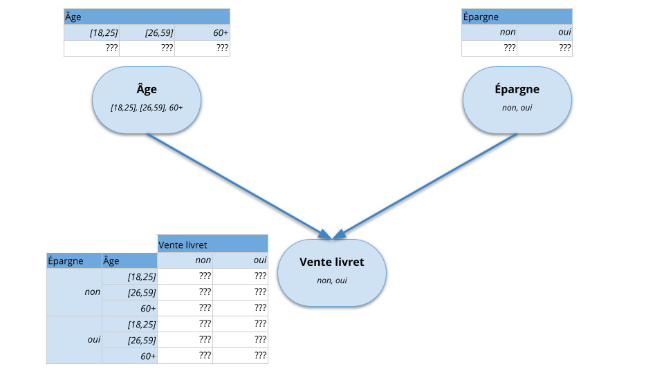
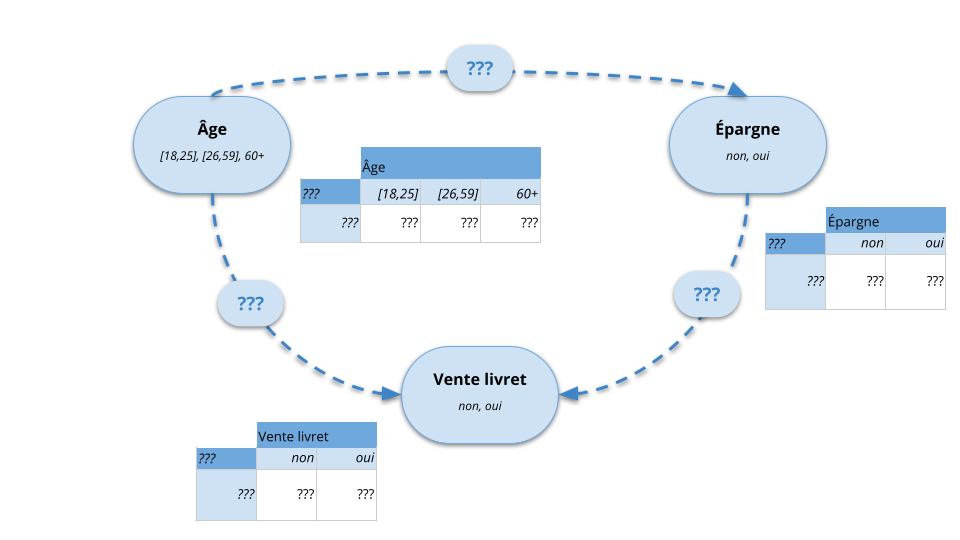
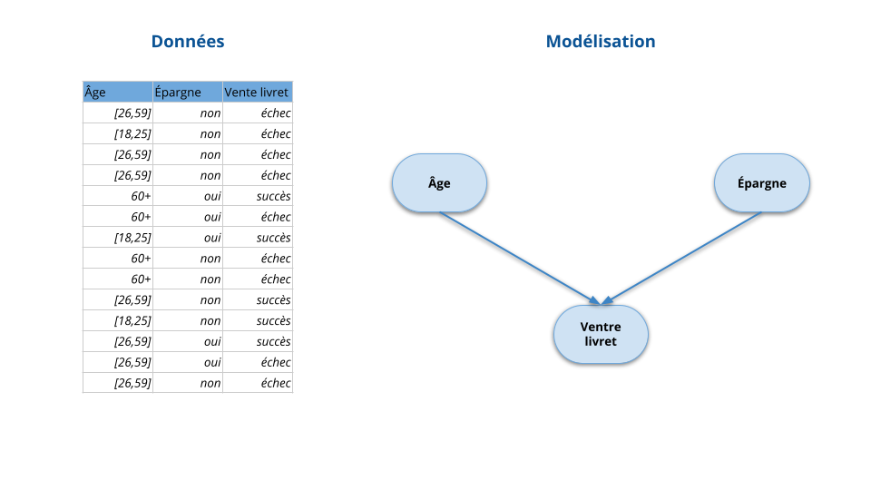
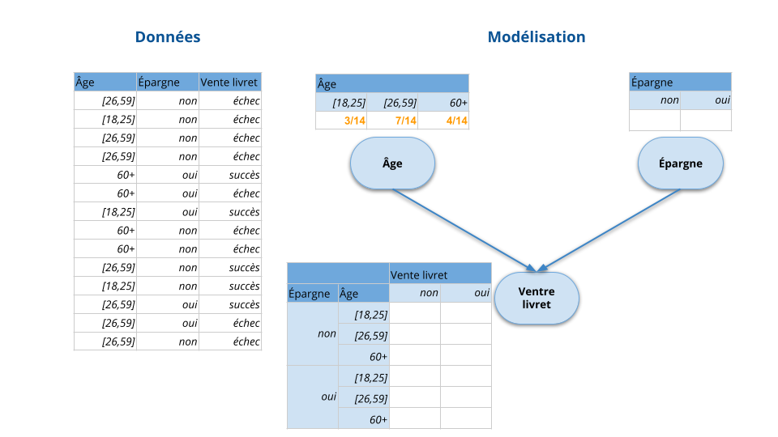
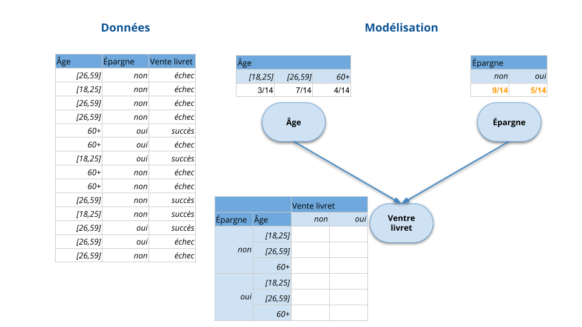
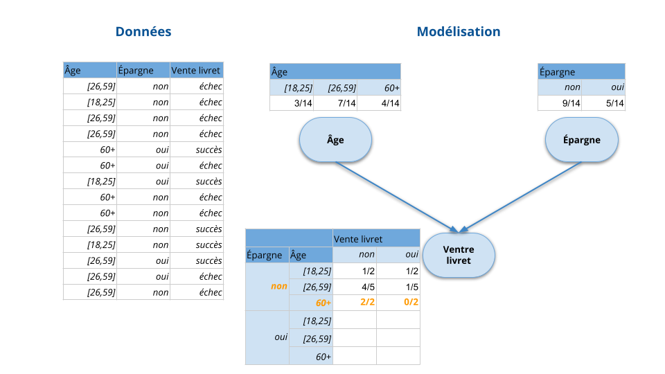
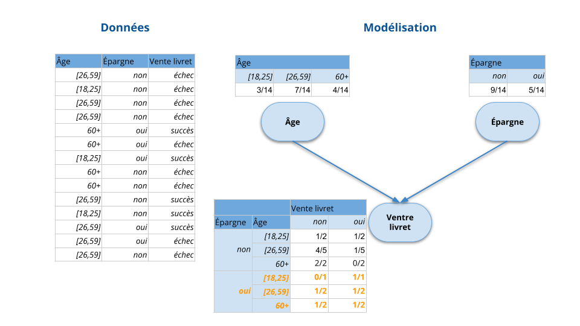

Introduction aux Réseaux Bayésiens
Apprentissage automatique des lois de probabilité conditionnelles
Roland Donat
Spécialité Cyber Data
Table des matières
Objectifs de la séance
- Comprendre les problématiques liées à la construction pratique d'un réseau bayésien
- Estimer automatiquement les lois de probabilité conditionnelles (LPC) à partir de données observées sur le phénomène étudié

Introduction
Problématique
Objectif
- Modéliser un phénomène aléatoire impliquant différentes variables \(X_{1}, \ldots, X_{D}\)
- Utiliser un réseau bayésien afin de représenter au mieux les relations entre les variables
Problèmes
- Comment déterminer la structure du réseau bayésien (i.e. le graphe)?
- Comment estimer les lois de probabilité conditionnelles (LPC) \(P(X_{d}|\text{pa}(X_{d})),~ d = 1, \ldots, D\) ?
Approches envisageables
- Approche par expertise : utilisation d'avis d'experts et connaissances métiers
- Approche statistique : utilisation de bases de données (contenant éventuellement des informations incomplètes)
- Approche mixte : expertise + bases de données
Problématique

Problématique

Problématique

Problématique

Construction par expertise
Acquisition de l'information
- Trouver des personnes expertes fiables et coopératives
- Familiariser ces personnes à la notion de probabilité
- Tenir compte de leurs biais éventuels (souvent inconscients)
- Utiliser un outil pour faciliter le recueil des informations
- Exemple : échelle de probabilité :

Construction par expertise
Problème
- L'expertise métier permet en général de construire des RB fidèles à la réalité opérationnelle
- En revanche, l'humain a intuitivement tendance à introduire des connexions convergentes
- Exemple : Soit \(Y\) un phénomène à expliquer et \(X_{1}, \ldots, X_{D}\), \(D\) facteurs explicatifs possibles
- Structure naturelle : \(X_{1} \to Y, \ldots, X_{D} \to Y\)
- Risque d'explosion combinatoire : Définir \(P(Y|X_{1},\ldots,X_{D})\) nécessite \(2^{D}\) valeurs dans le cas où les variables sont binaires
Solutions possibles
- Inverser les flèches et utiliser une structure naïve : \(Y \to X_{1}, \ldots, Y \to X_{D}\) en assumant les simplifications induites
- Introduction d'un modèle de LPC particulier, e.g. modèle OU-bruité
Apprentissage des LPC
Apprentissage des LPC - Données complètes
Hypothèses
- On modélise un phénomène aléatoire caractérisé par des variables aléatoires \(X_{1}, \ldots, X_{D}\) dont la loi est représentée par un RB
- Les variables aléatoires \(X_{1}, \ldots, X_{D}\) sont discrètes et finies
- Le graphe du RB est supposé connu
- On dispose d'un jeu de données \(\boldsymbol{D}\) contenant \(N\) observations indépendantes des variables aléatoires \(X_{1}, \ldots, X_{D}\)
Objectif
On cherche à estimer les LPC de ce RB :
- \(\Prob\lrPar{X_{1}|\pa\lrPar{X_{1}}}\)
- \(\Prob\lrPar{X_{2}|\pa\lrPar{X_{2}}}\)
- \(\ldots\)
- \(\Prob\lrPar{X_{d}|\pa\lrPar{X_{d}}}\)
- \(\ldots\)
- \(\Prob\lrPar{X_{D}|\pa\lrPar{X_{D}}}\)
où \(\pa\lrPar{X_{d}}\) désigne les variables parentes de la variable \(X_{d}\) dans le graphe du RB
Apprentissage des LPC - Données complètes

Apprentissage des LPC - Données complètes
Apprentissage des LPC - Données complètes

Apprentissage des LPC - Données complètes

Apprentissage des LPC - Données complètes
Apprentissage des LPC - Données complètes
Apprentissage des LPC - Données complètes

Apprentissage des LPC - Données complètes

Apprentissage des LPC - Données complètes

Apprentissage des LPC - Données complètes
Estimation des LPC
- L'estimation de chaque LPC d'un RB a pour expression :
\[
\hat{P}(X_{d} = x_{d,k}|\text{pa}(X_{d}) = \boldsymbol{x}^{\prime}_{d,j}) =
\frac{\# \{X_{d} = x_{d,k}~ \text{et}~
\text{pa}(X_{d}) = \boldsymbol{x}^{\prime}_{d,j}\}}{\# \{\text{pa}(X_{d}) = \boldsymbol{x}^{\prime}_{d,j}\}}
\]
- \(x_{d,k}\) : \(k\) -ème valeur possible pour la v.a. \(X_{d}\)
- \(\boldsymbol{x}^{\prime}_{d,j}\) : \(j\) -ème configuration de valeurs possibles pour les parents de la v.a. \(X_{d}\)
- Interprétation : Chaque probabilité \(\hat{P}(X_{d} = x_{d,k}|\text{pa}(X_{d}) =
\boldsymbol{x}^{\prime}_{d,j})\) est estimée par le rapport entre :
- le nombre d'événements \(\{X_{d} = x_{d,k}~ \text{et}~ \text{pa}(X_{d}) = \boldsymbol{x}^{\prime}_{d,j}\}\) observés dans les données
- et le nombre d'événements \(\{\text{pa}(X_{d}) = \boldsymbol{x}^{\prime}_{d,j}\}\) observés dans les données